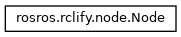
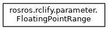
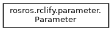
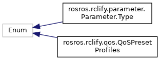
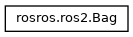
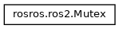
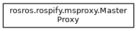

rosros
0.1.0
Simple unified interface to ROS1 / ROS2 Python API
Class Hierarchy
Go to the textual class hierarchy







Generated on Sun Oct 30 2022 18:54:33 for rosros by
1.8.17


 1.8.17
1.8.17